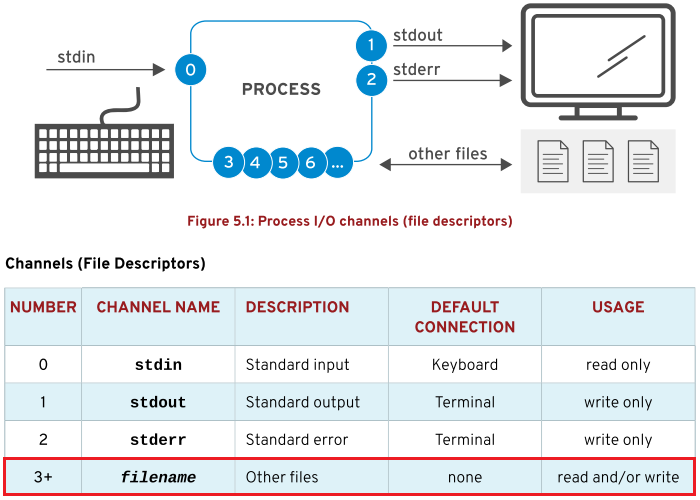

第五章 创建、查看和编辑文本文件
目标：
- 通过命令行输出或文本编辑器创建、查看和编辑文本文件。
章节：
- 将输出重定向至文件或程序
- 从Shell提示符编辑文本文件
- 更改Shell环境
第一节：将输出重定向至文件或程序
目标：
- 完成本节后，学生应该能使用shell重定向保存输出或错误，并且通过管道
利用多个程序处理命令输出。
标准输入、标准输出与标准错误：
- 一个运行的程序（或称为进程）需要从某位置读取输入并将输出写入某位置。
- shell命令通常会从键盘输入，在终端窗口输出。
- 进程使用称为文件描述符（file descriptors）的通道（channels）来处理输入和输出。
- 所有进程至少使用三种文件描述符：
1. 标准输入（standard input，channel 0）：读取键盘输入
2. 标准输出（standard output，channel 1）：将正确输出发送到终端
3. 标准错误（standard error，channel 2）：将错误输出发送到终端
4. channel > 2：将输出重定向到文件

* 注意：标准输入、标准输出与标准错误对应的设备，如下所示：

将输出重定向至文件：
- I/O重定向可更改进程获取其输入或输出的方式，从文件读取或向文件写入信息，而不是从键盘读取
和输出到终端。
- 可以使用重定向到/dev/null来丢弃错误输出，而不在终端显示。

* 注意：
1. > file 2>&1：重定向标准输出至文件并覆盖其中的内容，再将标准错误也输出至该文件。
2. 2>&1 > file：重定向标准输出至文件并覆盖其中的内容，但标准错误输出至终端。
3. 为避免以上的混淆，可使用如下方法进行重定向：

- 输出重定向示例：


构建管道（pipeline）：
- 管道包含多个命令，用竖线字符（|）分隔。
- 管道将前一个命令的标准输出连接到下一个命令的标准输入。

- 管道示例：

- 管道、重定向和tee命令：
1. 当重定向与管道组合时，shell会首先设置整个管道，然后重定向输入/输出。
重定向优先级高于管道！
2. 如果在管道的中间使用了输出重定向，则输出将转至文件，而不是前往管道中的下一个命令。
3. 以下示例中，ls命令的输出将转至文件，并且less命令不会在终端上显示任何内容。

4. tee命令克服了这个限制。
5. 在管道中，tee命令将其标准输入复制到其标准输出中，并且还将标准输出重定向到下一个命令。
6. 可将tee命令看作为管道中的T形接头，负责输出在两个方向上的流向。

- 使用tee命令的管道示例：
1. 将ls命令的输出重定向到文件，并且将输出传递到less以便在终端上以一次一屏的方式显示。

2. 若在管道末尾使用tee命令，则可以保存命令的最终输出并且同时输出到终端。

* 注意：
1. 可通过管道来重定向标准错误，但是不能使用合并重定向运算符（&>和&>>）执行此操作。
合并重定向运算符中包含标准输出重定向操作。
2. 以下是通过管道重定向标准输出和标准错误的正确方法：

练习 P132：REDIRECTING OUTPUT TO A FILE OR PROGRAM
第二节：从Shell提示符编辑文本文件
目标：
- 完成本节后，学生应该能使用vim编辑器在命令行中创建与编辑文本文件。
使用VIM编辑文件：
- Linux的一个重要原则是信息和配置通常都存储在基于文本的文件中。
- 文本文件的优点在于易于查看和编辑。
- Vim是随Linux和UNIX系统的vi编辑器的改进版本。
- Vim对于有经验的用户而言具有很高的可配置性和效率，其包含分屏编辑、颜色格式和
突出显示编辑文本等功能。
为何要学习Vim?
- 用户应该了解至少一种能从shell提示符使用的文本编辑器。
- 用户可以从终端窗口，或通过ssh来编辑基于文本的配置文件。
- 实际上，服务器可能根本不需要运行图形桌面环境。
- 由于所有Unix和Linux都遵循POSIX标准，而POSIX指定vi作为编辑器，所以都会安装vi甚至Vim，
包括 macOS。
启动Vim：
- RHEL中Vim通过两种方式安装，安装方式不同可能影响操作方式。
- 轻量级安装vim-minimal软件包，只包含vi命令及核心功能。
- 完整安装vim-enhanced软件包，包含vim命令和完整功能。

- $ vi <filename>：打开文件进行编辑
$ vim <filename>：打开文件进行编辑
$ vimtutor：Vim在线帮助与教程
* 注意：对于UID > 200的用户，操作系统设置了别名"alias vi=vim"。
Vim操作模式：
- Vim的运行模式：
1. 命令模式（command模式）
2. 扩展命令模式（extended command模式）
3. 编辑模式（edit模式）
4. 可视模式（visual edit模式）

Vim简单操作：
- Vim以命令模式启动，i 进入编辑模式，Esc 退回命令模式。
- v 进入可视模式，shift+v 选择多行，ctrl+v 选择文本块。
- : 进入扩展命令模式，执行保存、退出等工作。
- 在命令模式下，u 撤销，x 删除单个字符。
- :w 保存文件，:wq 保存退出，:q! 不保存并强制退出。
- 命令模式下，y 复制，p 粘贴。
练习 P140：EDITING TEXT FILES FROM THE SHELL PROMPT
第三节：更改Shell环境
目标：
- 完成本节后，学生应该能设置shell变量帮助运行命令，并且编辑Bash启动脚本
设置shell与环境变量，从而修改shell以及从shell运行的程序的行为。
使用Shell变量（shell variables）：
- Bash shell可以设置变量，甚至将变量导出成为环境变量（environment variables），
从而自动代入启动的程序。
- 可以使用变量运行带有冗长参数的命令。
- shell变量对于shell会话是唯一的，即每个shell会话终端具有单独设置的shell变量
不受其他shell会话终端影响。
为变量赋值：
- 变量名称可以包含大写或小写字母、数字和下划线字符（_），变量名称不能使用数字开头。


- 注意：以上的shell变量赋值只对当前运行的shell有效，对其余shell无效。
- set命令：查看当前所有的shell变量

查看与重置shell变量值：
- $ echo $variable_name：获得shell变量值

* 注意：
1. 若shell变量名称旁边有任何尾随字符，可能需要使用花括号来保护变量名称。
2. 该方法与Perl中的变量引用相同

- unset命令：重置shell变量值

使用Shell变量配置Bash：
- 一些shell变量在Bash启动时设置，但可以进行修改来调整shell的行为。
- shell变量示例：
1. 影响history命令的两个shell变量：HISTFILE、HISTFILESIZE。
可分别在 /etc/profile 或 ~/.bash_profile 中指定。
2. 控制shell提示符外观的shell变量：PS1

使用环境变量配置程序：
- 环境变量（environment variables）可以传递给shell中运行的程序。
- 不是环境变量的shell变量只能由shell使用。
- 环境变量可以由shell以及从该shell运行的程序使用。
* 注意：
1. 之前使用的 HISTFILE、HISTFILESIZE 和 PS1 不需要导出为环境变量，
因为它们仅供shell本身使用，而不从该shell运行的程序使用。
2. shell变量与环境变量默认使用大写字母表示，自定义的变量可使用小写字母以示区别。

- export命令：将shell变量导出成为环境变量


- PATH环境变量：包含由冒号分隔的具有程序的目录列表
- 运行命令时，shell将在目录列表中依次查找，运行第一个查找到的可执行程序。

- 添加自定义程序目录至PATH环境变量中，如下所示：

- 使用env命令查看当前shell的所有环境变量。

- $ export -n $env_variable_name：重置环境变量赋值
自动设置变量：
- Bash启动时，会从/etc/profile、/etc/bashrc、~/.bash_profile和~/.bashrc
中导入环境变量。
- 如果要对所有用户的登录shell起作用，修改/etc/bashrc文件。
- 如果对指定用户的登录shell起作用，修改~/.bashrc文件。
练习 P148：CHANGING THE SHELL ENVIRONMENT
Lab P151：CREATING, VIEWING, AND EDITING TEXT FILES